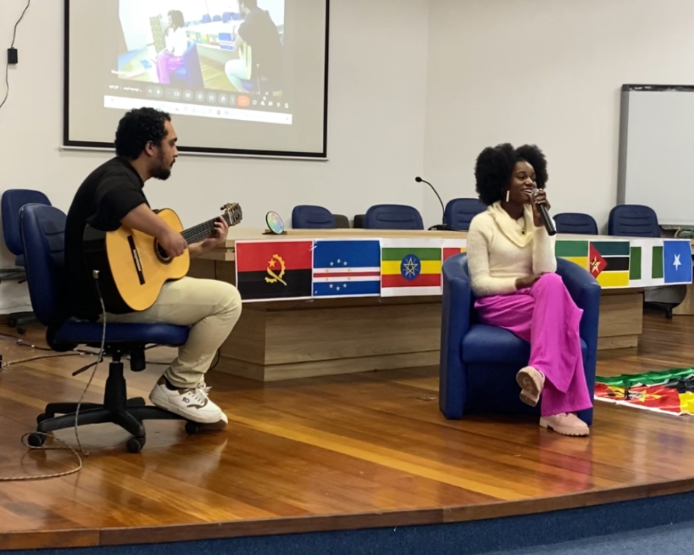
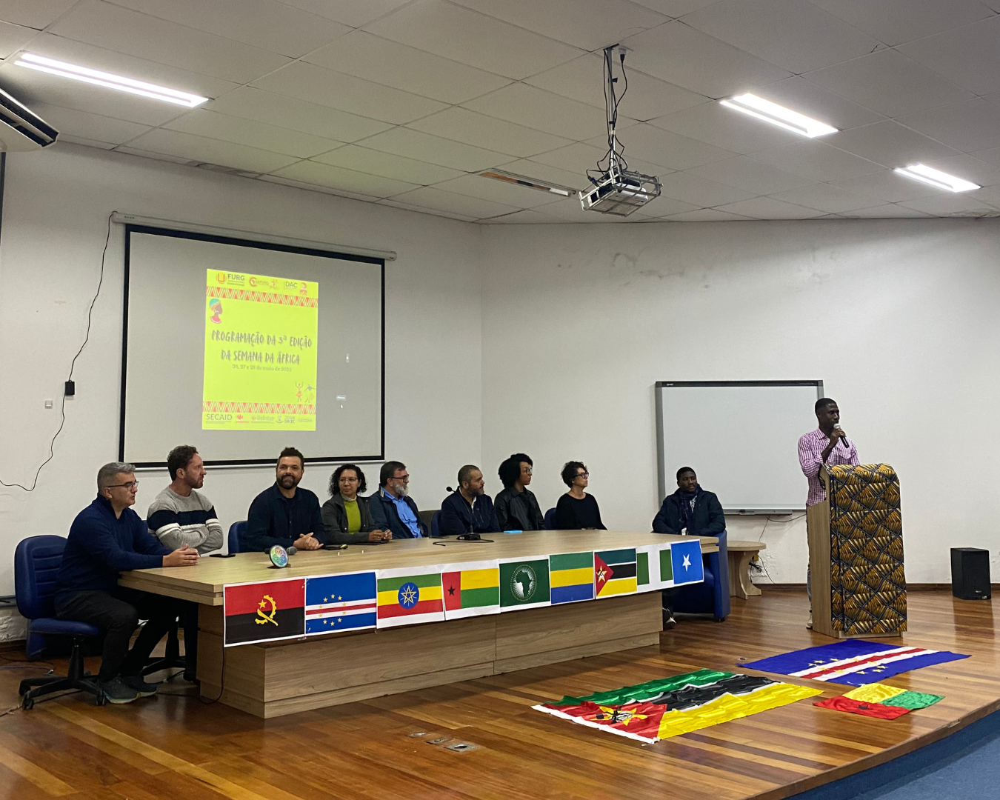

Apoiadora do evento promovido pelo CEAFURG, a REINTER marcou presença no primeiro dia de celebração.
Na manhã de segunda-feira (26), deu-se início a Terceira Edição da Semana da África, evento organizado pelo Coletivo de Estudantes Africanos na FURG. O evento acontece nos dias 26, 27 e 28 de maio, com encontros no Campus Carreiros e no Campus Santa Vitória do Palmar. A abertura oficial, realizada no Auditório da SEAD, contou com a presença da secretária municipal da Cultura, do presidente da Câmara Municipal de Vereadores, de representantes da REINTER, SECOM, SECAID e de outras entidades apoiadoras da FURG.
Apresentação da artista cabo-verdiana Edneia Brazão.
Este ano, o evento tem como tema ‘Pan-africanismo: Unidade, Resistência e Direitos na Construção de uma África Inclusiva’. No primeiro dia, a programação foi marcada por diversas atividades culturais, que celebraram a história e a identidade dos povos africanos. Pela manhã, ocorreu a abertura oficial, apresentação musical de diferentes gêneros africanos, dança, poesia, canto do hino e degustação de comidas típicas africanas. As atividades seguiram no período da tarde, com uma roda de conversa com o tema “Coletivos Negros e suas vivências: desafios enfrentados na universidade para sua manutenção e afirmação".
Maurício Terra, representante da REINTER na mesa de apoiadores, agradeceu ao coletivo por proporcionar que a REINTER fizesse parte do evento da Semana da África desde sua primeira edição. “Eu fico muito alegre de ver que, ano após ano, o auditório está cada vez mais cheio, a gente tem cada vez mais participações. Significa que o nosso trabalho está indo conforme o planejado”, diz.
Mesa de apoiadores do evento.
Ele destacou que o papel da REINTER é garantir que a internacionalização da universidade ocorra não só fora, mas também dentro do campus. “Para nós é muito importante que os alunos estrangeiros e, consequentemente, os alunos africanos tenham representação na universidade. Nós ficamos muito felizes de poder auxiliar para que vocês tenham espaço para falar da cultura de vocês e para que vocês se identifiquem com a universidade assim como a universidade possa se identificar com vocês”, finaliza Maurício.
A programação da Terceira Edição da Semana da África segue nos próximos dias com palestras, mesas-redondas, apresentações culturais – incluindo dança e poesia africana – e exposição de trabalhos.
REINTER participa da abertura da Terceira Edição da Semana da África do CEAFURG
- Detalhes
- Escrito por Isadora Jaeger
- Acessos: 38